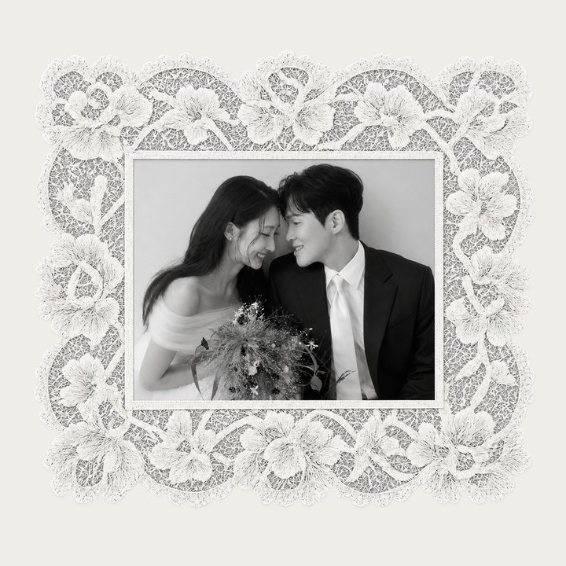

2026.11.14

12:00 PM

12:00 PM
Groom
이석종
Lee Seokjong


Bride
신예진
Shin Yejin


Our Story
2021년 4월의 어느 봄날,
처음 마주한 두 사람이
함께한 계절들을 지나
오늘, 같은 길 위에 섭니다.

Our Moments
우리의 순간들


Just as
we are
있는 그대로를 사랑하며

Always
on your side
평생 서로의 편이 되어


Through
five seasons
다섯 해의 계절을 지나
with you


저희의 새로운 시작을 함께 축복해 주세요
A new beginning
Thank you
함께해 주셔서 감사합니다
Seokjong & Yejin · 2026.11.14